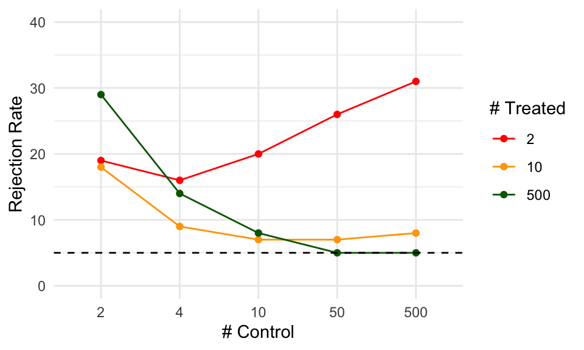
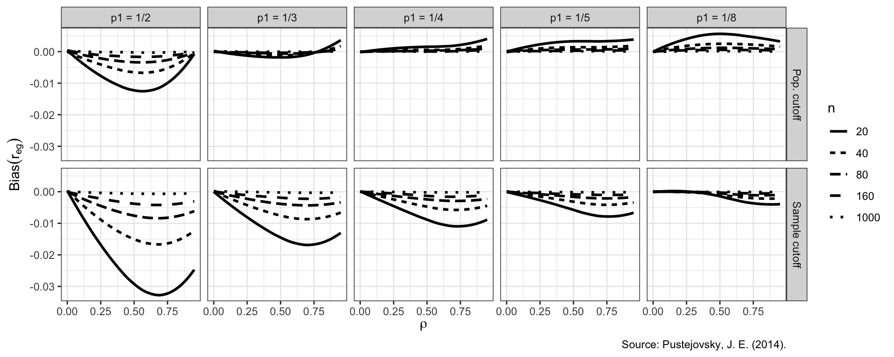
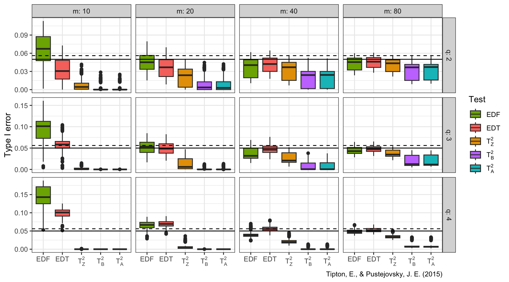

Chapter 12 Presentation of simulation results
Once we have our performance measures for each method for each of our simulation scenarios, how do we explore them? For our Cluster RCT simulation, for example, we have 270 different simulation scenarios across our factors. For each scenario we calculate a whole suite of performance measures we might be interested in (e.g., bias, se, rmse, coverage, …), and we have these performance measures for each of our three methods. All these results can be stored as a table with 810 rows (three rows per simulation scenario, with each row corresponding to a specific method) and one column per performance metric. Navigating all of this can feel somewhat overwhelming. How can we understand trends across this complex domain?
Tackling this question is the primary purpose of this chapter. A first principle to keep in mind is that the goal of a simulation study is to provide evidence for a research question. If you keep the research question in mind, it will be easier to stay on track and not get overwhelmed by the many options you have for analysis. This first principle will, for example, help you navigate which performance measures are most important. A second principle is that a good piece of analysis will give you clear understanding of how one or more of your simulation factors matter, in terms of your performance measures of interest.
For your final write-up, you will not want to present everything. A wall of numbers and observations only serves to pummel the reader, rather than inform them; readers rarely enjoy being pummeled, and so they will simply skim or skip such material while feeling hurt and betrayed. Instead, present selected results that clearly illustrate the main findings from the study, along with anything unusual/anomalous. Your presentation will typically be best served with a few well-chosen figures. Then, in the text of your write-up, you might include a few specific numerical comparisons. Do not include too many of these, and be sure to say why the numerical comparisons you include are important.
To form these final exhibits, you will likely have to generate a wide range of results that show different facets of your simulation. These are for you, and will help you deeply understand what is going on. You then try to simplify the story, in a way that is honest and transparent, by curating this full set of figures to your final ones. Many of the remainder will then become supplementary materials that contain further detail to both enrich your main narrative and demonstrate that you are not hiding anything.
Results are by definition a simplified summary of a complex thing. The alert reader will know this, and will thus be suspicious about what you might not be showing. To give a great legitimacy bump to your work, you should also provide reproducible code so others could, if so desired, rerun the simulation and conduct the analysis themselves, or rerun your simulation under different conditions. Even if no one touches your code, the code’s existence and availability builds confidence. People will naturally think, “if that researcher is so willing to let me see what they actually did, then they must be fairly confident it does not contain too many horrendous mistakes.”
There are three primary tools for presenting simulation results:
- Tabulation
- Visualization
- Modeling
We next walk through these three modes of engaging with one’s simulation results, with a few examples taken from the literature and our own work.
12.1 Tabulation
Traditionally, simulation study results are presented in big tables. In general, we believe tables rarely make the take-aways of a simulation readily apparent. Perhaps tables are fine if…
- they involve only a few numbers, and a few targeted comparisons.
- it is important to report exact values for some quantities.
Unfortunately, simulations usually produce lots of numbers, and involve making lots of comparisons. You are going to want to show, for example, the relative performance of alternative estimators, or the performance of your estimators under different conditions for the data-generating model. This means a lot of rows, and a lot of dimensions. Tables can do two dimensions; when you try to cram more than that into a table, no one is particularly well served.
Furthermore, in simulation, exact values for your bias/RMSE/type-I error, or whatever, are not usually of interest. And in fact, we rarely have them due to Monte Carlo simulation error. The tables provide a false sense of security, unless you include uncertainty, which clutters your table even further.
Overall, tables and simulations do not particularly well mix. In particular, if you are ever tempted into putting your table in landscape mode to get it to fit on the page, think again. It is often more useful and insightful to present results in graphs (Gelman, Pasarica, and Dodhia 2002).
To illustrate, consider this table of simulation results showing the false rejection rate, against an \(\alpha=0.10\), for an estimator of an average treatment impact, where we varied the treatment and control group sizes:
## Min. 1st Qu. Median Mean 3rd Qu. Max.
## 0.0445 0.1600 0.2687 0.3390 0.4540 1.0000| nT | nC | reject |
|---|---|---|
| 2 | 2 | 19 |
| 2 | 4 | 16 |
| 2 | 10 | 20 |
| 2 | 50 | 26 |
| 2 | 500 | 31 |
| 10 | 2 | 18 |
| 10 | 4 | 9 |
| 10 | 10 | 7 |
| 10 | 50 | 7 |
| 10 | 500 | 8 |
| 500 | 2 | 29 |
| 500 | 4 | 14 |
| 500 | 10 | 8 |
| 500 | 50 | 5 |
| 500 | 500 | 5 |
We can see that the rejection rates are often well above 10%, and that if there are few treatment units, the rates are all way too high. Because of the ordering of rows, it is a bit harder to see how the number of control units impacts the rate, and understanding the joint relationship between number of treatment and number of control requires extra thinking. But this is a classic type of table you might see in a paper: the table is a group of tables indexed by one factor, with the second varying within each group.
By contrast, a plot of these exact same numbers (this is an “interaction plot” showing the “interaction” of nT and nC) can make trends much more clear:

Now we immediately see that only if both nC and nT are above 50 do we get our nominal rates. Even if nC is 500, we are elevated if nT is only 10. When nT is 2, then increased size of nC actually increases the rejection rate, meaning larger samples are worse; this is not obvious from looking at the raw table results.
12.1.1 Example: estimators of treatment variation
Tables can be used a bit more effectively to show average performance across a range of simulation scenarios. In short: use tables to summarize findings, rather than using them to show raw results.
For example, in ongoing work, Miratrix has been studying the performance of a suite of estimators designed to estimate individual treatment effects. To test which estimators perform better or worse than the others, we designed a series of scenarios where we varied the data-generating model by a variety of factors. We then, for each scenario, calculated the performance, and then the relative performance of each estimator to the median of all estimators considered.
We can then ask, do some methods perform better than their peers on average across all scenarios considered? The following table gives an answer to this question: for each method we calculate average performance, and then we order the methods from highest average RMSE to lowest:
## # A tibble: 85 × 10
## model measure level level_sd level_10 level_90
## <fct> <chr> <dbl> <dbl> <dbl> <dbl>
## 1 ATE R2 0 0 0 0
## 2 ATE bias 0.149 0.0497 0.0989 0.200
## 3 ATE rmse 0.154 0.0512 0.101 0.207
## 4 ATE se 0.0339 0.0161 0.0145 0.0576
## 5 ATE spearm… 0 0 0 0
## 6 BART… R2 0.399 0.247 0.0522 0.741
## 7 BART… bias 0.101 0.0399 0.0522 0.159
## 8 BART… rmse 0.118 0.0434 0.0676 0.183
## 9 BART… se 0.0595 0.0260 0.0317 0.0973
## 10 BART… spearm… 0.541 0.216 0.222 0.811
## # ℹ 75 more rows
## # ℹ 4 more variables: perf <dbl>, sdperf <dbl>,
## # perf_10 <dbl>, perf_90 <dbl>| model | bias | se | rmse | sd_bias | sd_se | sd_rmse | R2 | sd_R2 |
|---|---|---|---|---|---|---|---|---|
| BART S | -6 | -28 | -17 | 13 | 14 | 12 | 59 | 40 |
| CF | -10 | -2 | -10 | 14 | 34 | 11 | 66 | 97 |
| CF LC | -10 | -1 | -10 | 14 | 33 | 10 | 64 | 96 |
| LASSO R | 2 | -21 | -10 | 9 | 13 | 10 | 4 | 30 |
| LASSO MCM EA | 2 | -20 | -10 | 9 | 13 | 10 | 4 | 30 |
| LASSO MOM DR | 2 | -21 | -9 | 9 | 13 | 10 | 3 | 30 |
| RF MOM DR | 3 | -12 | -8 | 15 | 16 | 8 | 39 | 68 |
| LASSO T | -1 | -10 | -6 | 16 | 23 | 9 | 22 | 62 |
| LASSO T INT | -4 | 19 | 5 | 16 | 55 | 17 | 10 | 52 |
| LASSO MCM | 20 | 4 | 8 | 20 | 10 | 8 | -56 | 22 |
| LASSO MOM IPW | 20 | 4 | 8 | 20 | 10 | 8 | -55 | 22 |
| ATE | 47 | -60 | 9 | 48 | 7 | 17 | NA | NA |
| RF T | -22 | 60 | 11 | 17 | 48 | 19 | 60 | 114 |
| RF MOM IPW | 15 | 27 | 12 | 31 | 20 | 13 | -26 | 54 |
| OLS S | -26 | 87 | 23 | 28 | 83 | 34 | 21 | 42 |
| BART T | -38 | 103 | 25 | 19 | 54 | 22 | 49 | 64 |
| CDML | 9 | 71 | 31 | 20 | 99 | 46 | -6 | 51 |
## Warning: Unknown or uninitialised column:
## `set_id`.## Warning: Unknown or uninitialised column:
## `queen`.## [1] 0We are summarizing 0 scenarios. The standard deviation columns give some sense of how much the relative performance of a method changes from scenario to scenario. Seeing this variation more explicitly might be better done with a visualization; we explore that below.
Overall, the table does give a nice summary of the results, but we still do not feel it makes the results particularly visceral. Visualization can make trends jump out much more clearly.
So much for tables.
12.2 Visualization
Visualization should nearly always be the first step in analyzing simulation results. To illustrate some illustration principles, we next present a series of visualizations taken from our published work, illustrating some different themes behind visualization that we believe are important. In later chapters we talk about how to get to this final point by iteratively refining a series of plots.
12.2.1 Example 1: Biserial correlation estimation
Our first example, from Pustejovsky (2014), shows the bias of a biserial correlation estimate from an extreme groups design. This simulation was a \(96 \times 2 \times 5 \times 5\) factorial design (true correlation for a range of values, cut-off type, cut-off percentile, and sample size). The correlation, with 96 levels, forms the \(x\)-axis, giving us nice performance curves. We use line type for the sample size, allowing us to easily see how bias collapses as sample size increases. Finally, the facet grid gives our final factors of cut-off type and cut-off percentile. All our factors, and nearly 5000 explored simulation scenarios, are visible in a single plot.
## `geom_smooth()` using formula = 'y ~ x'
To make this figure, we smoothed the lines with respect to rho using geom_smooth().
This is a nice tool for taking some of the simulation jitter out of an analysis to show overall trends more directly.
12.2.2 Example 2: Variance estimation and Meta-regression
In our next example, from Tipton and Pustejovsky (2015), we explore Type-I error rates of small-sample corrected F-tests based on cluster-robust variance estimation in meta-regression. The simulation aimed to compare 5 different small-sample corrections.
This was a complex experimental design, varying several factors:
- sample size (\(m\))
- dimension of hypothesis (\(q\))
- covariates tested
- degree of model mis-specification

Again using small multiples, we are able to show a lot of simulation factors at once: sample size, dimension of hypothesis, and the test used. The boxplot shows the Type-I error rates for the different small-sample corrections across the covariates tested and degree of model misspecification. We add a line at the target 0.05 rejection rate to ease comparison. The reach of the boxes shows how some methods are more or less vulnerable to different types of misspecification. Some estimators (e.g., \(T^2_A\)) are clearly hyper-conservitive, with very low rejection rates. Other methods (e.g., EDF), have a range of very high rejection rates when \(m = 10\); these must depend on model mis-specification and number of covariates tested (the things in the boxes).
12.2.3 Example 3: Heat maps of coverage
The visualization below shows the coverage of parametric bootstrap confidence intervals for momentary time sampling data. In this simulation study the authors were comparing maximum likelihood estimators to posterior mode (penalized likelihood) estimators of prevalence. We have a 2-dimensional parameter space of prevalence (19 levels) by incidence (10 levels). We also have 12 levels of sample size.
For data with many levels of two different factors, one option is to use a heat map, showing the combinations of prevalence and incidence as a grid for each sample size level. We break coverage into ranges of interest, with green being “good” (near 95%) and yellow being “close” (92.5% or above). For this to work, we need our MCSE to be small enough that our coverage is estimated precisely enough to show structure.


For each plot, we can see clear trends, where coverage degrades for low incidence rates. We are wrapping our small multiples by sample size–if you have many levels of a factor you can wrap to show all the levels, which is good, but wrapping does not take advantage of the two-dimensional aspect of having rows and columns of plots (such as we saw with Example 1 and Example 2).
For comparing our two estimators, the prevelance of green in the bottom plot shows generally good behavior for the penalized MLE. The upper plot has less green, showing worse coverage; the improvement of the penalized MLE over the simple MLE is clear. To see this plot in real life, see Pustejovsky and Swan (2015).
12.2.4 Example 4: Relative performance of treatment effect estimators
Revisiting the example of different estimators for estimating treatment variation from the table example above, we can try to plot our results.
As a starting point, we can use the same data we used for the table, and just plot the values as bars:

Now we can more visually see how the trends of performance between the different methods correspond. This plot does not, however, show how variation across scenarios might play out. We can extend this plot by plotting boxplots of the actual performances across all scenarios.
In the plot below, we show the range of relative performances for each estimator vs the median, across the simulations. We again order the methods from highest average RMSE to lowest, and plot the average performance across all the simulations as little circles (these would correspond to the bars, above).

The simulation summarizes performance across 324 scenarios, now showing how much the relative performance can change from scenario to scenario. We truncate extreme values to make the plot more readable and bring focus to central tendencies. We are able to see three performance measures at the same time. The x-axis is on a log scale, again selected to navigate long tails and highlight relative performances. It also makes the scale of improved performance (less than x1) similar to worse performance (above x1).
For our second plot, we had to drop R2 for this plot, since the R2 measure was in percentage points, and included negative values; this was not compatible with the log scaling.
We have lost something in order to gain something; what plot is best will often be a matter of aesthetic opinion.
Pick your plot based on whether it is clearly communicating the message you are trying to get across. (We could also dive into complex plot management, making an R2 plot and adding it to the right of the above plot; we could do this with plot control packages like patchwork or cowplot, but we do not do that here.)
12.3 Modeling
Simulations are designed experiments, often with a full factorial structure. We can therefore leverage classic means for analyzing such full factorial experiments. In particular, we can use regression to summarize how a performance measure varies as a function of the different experimental factors.
First, in the language of a full factor experiment, we might be interested in the “main effects” and the “interaction effects.” A main effect is whether, averaging across the other factors in our experiment, a factor of interest systematically impacts performance. When we look at a main effect, the other factors help ensure our main effect is generalizable: if we see a trend when we average over the other varying aspects, then we can state that our finding is relevant across the host of simulation contexts explored, rather than being an idiosyncratic aspect of a specific and narrow context
12.3.1 Example 1: Biserial, revisited
For example, consider the bias of the biserial correlation estimates from above. Visually, we see that several factors appear to impact bias, but we might want to get a sense of how much. In particular, does the population vs sample cutoff option matter, on average, for bias, across all the simulation factors considered?
We can fit a regression model to see:
options(scipen = 5)
mod = lm( bias ~ fixed + rho + I(rho^2) + p1 + n, data = r_F)
summary(mod, digits=2)##
## Call:
## lm(formula = bias ~ fixed + rho + I(rho^2) + p1 + n, data = r_F)
##
## Residuals:
## Min 1Q Median 3Q
## -0.0215935 -0.0013608 0.0003823 0.0015677
## Max
## 0.0081802
##
## Coefficients:
## Estimate Std. Error
## (Intercept) 0.00218473 0.00015107
## fixedSample cutoff -0.00363520 0.00009733
## rho -0.00942338 0.00069578
## I(rho^2) 0.00720857 0.00070868
## p1.L 0.00461700 0.00010882
## p1.Q -0.00160546 0.00010882
## p1.C 0.00081464 0.00010882
## p1^4 -0.00011190 0.00010882
## n.L 0.00362949 0.00010882
## n.Q -0.00103981 0.00010882
## n.C 0.00027941 0.00010882
## n^4 0.00001976 0.00010882
## t value Pr(>|t|)
## (Intercept) 14.462 < 2e-16 ***
## fixedSample cutoff -37.347 < 2e-16 ***
## rho -13.544 < 2e-16 ***
## I(rho^2) 10.172 < 2e-16 ***
## p1.L 42.426 < 2e-16 ***
## p1.Q -14.753 < 2e-16 ***
## p1.C 7.486 8.41e-14 ***
## p1^4 -1.028 0.3039
## n.L 33.352 < 2e-16 ***
## n.Q -9.555 < 2e-16 ***
## n.C 2.568 0.0103 *
## n^4 0.182 0.8559
## ---
## Signif. codes:
## 0 '***' 0.001 '**' 0.01 '*' 0.05 '.' 0.1 ' ' 1
##
## Residual standard error: 0.003372 on 4788 degrees of freedom
## Multiple R-squared: 0.5107, Adjusted R-squared: 0.5096
## F-statistic: 454.4 on 11 and 4788 DF, p-value: < 2.2e-16The above printout gives main effects for each factor, averaged across other factors.
Because p1 and n are ordered factors, the lm() command automatically generates linear, quadradic, cubic and fourth order contrasts for them.
We smooth our rho factor, which has many levels of a continuous measure, with a quadratic curve.
We could instead use splines or some local linear regression if we were worried about model fit for a complex relationship.
The main effects are summaries of trends across contexts. For example, averaged across the other contexts, the “sample cutoff” condition is around 0.004 lower than the population (the baseline condition).
We can also use ANOVA to get a sense of the major sources of variation in the simulation results (e.g., identifying which factors have negligible/minor influence on the bias of an estimator).
To do this, we use aov() to fit an analysis of variance model:
## Df Sum Sq Mean Sq F value
## rho 1 0.002444 0.002444 1673.25
## p1 4 0.023588 0.005897 4036.41
## fixed 1 0.015858 0.015858 10854.52
## n 4 0.013760 0.003440 2354.60
## rho:p1 4 0.001722 0.000431 294.71
## rho:fixed 1 0.003440 0.003440 2354.69
## p1:fixed 4 0.001683 0.000421 287.98
## rho:n 4 0.002000 0.000500 342.31
## p1:n 16 0.019810 0.001238 847.51
## fixed:n 4 0.013359 0.003340 2285.97
## rho:p1:fixed 4 0.000473 0.000118 80.87
## rho:p1:n 16 0.001470 0.000092 62.91
## rho:fixed:n 4 0.002929 0.000732 501.23
## p1:fixed:n 16 0.001429 0.000089 61.12
## rho:p1:fixed:n 16 0.000429 0.000027 18.36
## Residuals 4700 0.006866 0.000001
## Pr(>F)
## rho <2e-16 ***
## p1 <2e-16 ***
## fixed <2e-16 ***
## n <2e-16 ***
## rho:p1 <2e-16 ***
## rho:fixed <2e-16 ***
## p1:fixed <2e-16 ***
## rho:n <2e-16 ***
## p1:n <2e-16 ***
## fixed:n <2e-16 ***
## rho:p1:fixed <2e-16 ***
## rho:p1:n <2e-16 ***
## rho:fixed:n <2e-16 ***
## p1:fixed:n <2e-16 ***
## rho:p1:fixed:n <2e-16 ***
## Residuals
## ---
## Signif. codes:
## 0 '***' 0.001 '**' 0.01 '*' 0.05 '.' 0.1 ' ' 1The advantage here is the multiple levels of our categorical factors get bundled together in our table of results, making a tidier display. We can also summarise our anova table to see the contribution of the various factors and interactions to the total amount of variation in performance:
| eta.sq | eta.sq.part | |
|---|---|---|
| rho | 0.02 | 0.26 |
| p1 | 0.21 | 0.77 |
| fixed | 0.14 | 0.70 |
| n | 0.12 | 0.67 |
| rho:p1 | 0.02 | 0.20 |
| rho:fixed | 0.03 | 0.33 |
| p1:fixed | 0.02 | 0.20 |
| rho:n | 0.02 | 0.23 |
| p1:n | 0.18 | 0.74 |
| fixed:n | 0.12 | 0.66 |
| rho:p1:fixed | 0.00 | 0.06 |
| rho:p1:n | 0.01 | 0.18 |
| rho:fixed:n | 0.03 | 0.30 |
| p1:fixed:n | 0.01 | 0.17 |
| rho:p1:fixed:n | 0.00 | 0.06 |
Here we see which factors are explaining the most variation. E.g., p1 is explaining 21% of the variation in bias across simulations.
The contribution of the three way interactions is fairly minimal, by comparison, and could be dropped to simplify our model.
Modeling summarizes overall trends, and ANOVA allows us to identify what factors are relatively more important for explaining variation in our performance measure. We can fit our regression model for each performance measure in turn, to understand what drives our results.
Making a visualization often requires creating a bunch of graphs to look at different aspects of the data. From that pile of graphs, you would then refine ones that communicate the overall results most cleanly, and include those in your main write-up. We find we often generate a series of R Markdown reports that load the simulation results and generate these visualizations as an initial document to talk about internally with the research team.
Especially with multi-factor simulations, use boxplots to depict range and central tendency across many combinations of parameter values. While these can be over-dispersed if you have substantial Monte Carlo Simulation Error, hopefully the variation induced by the different simulation factors will swamp that effect.
To get a sense of overall trends, you can aggregate across factors, averaging your performance metrics and then making line charts or scatterplots.
For all of these plots, if you have a lot of factors, you might also want to use small multiples (faceting) to break up the plots into manageable chunks. Do this especially if entire sets of simulation results are on radically different scales of performance (e.g., you have a range of outcomes explored, each on a different scale). You can further use color, shape, and line type to encode different factors.